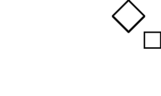
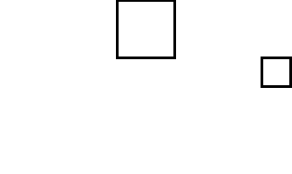
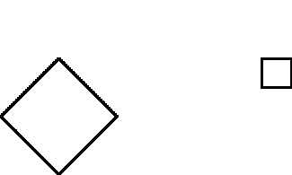

1 (a)
| (1 + i)*C = -1 + 3i | (1 + i)*D = 4i |
| (1 + i)*A = 2i | (1 + i)*B = 1 + 3i |
|  |
1 (b)
| 2i*C = -4 + 2i | 2i*D = -4 + 4i |
| 2i*A = -2 + 2i | 2i*B = -2 + 4i |
|  |
1 (c)
| (-2 + 2i)*C = -6 - 2i | (-2 + 2i)*D = -8 |
| (-2 + 2i)*A = -4 | (-2 + 2i)*B = -6 + 2i |
|  |
Return to Exercises.